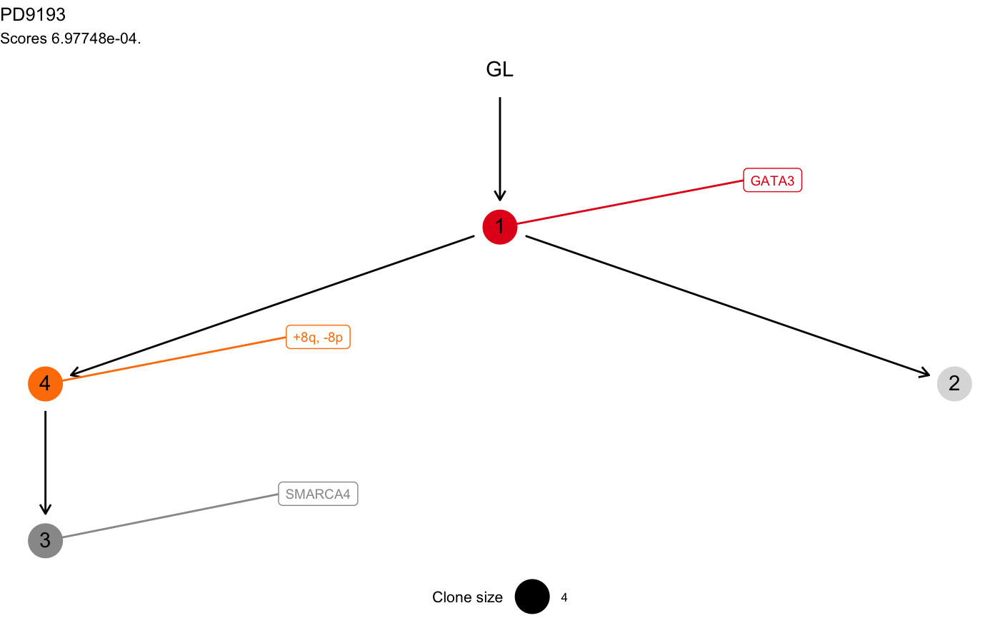

mtrees.RdThis constructor creates a list of objects of class `'mtree'`, after using a sampling strategy to determine possible trees that fit the data. The strategy to sample trees can be controlled, a maximum number of trees can be sampled with a Monte Carlo procedure and the actual process can be exhausted if there are less than a number of available trees to fit the data.
Note that the parameters of this function includes the same parmeters of
function mtree, plus the parameters of the sampler. See
mtree for an explanation of the parameters.
mtrees(binary_clusters, drivers, samples, patient, sspace.cutoff = 10000, n.sampling = 5000, store.max = 100, evaluation = ">=")
| binary_clusters | Clusters of binary annotations in the data of this patient. See the package vignette to see the format in which this should be specified. |
|---|---|
| drivers | A list of driver events that should be annotated to each one of the input clusters contained in the `CCF_clusters` parameter. See the package vignette to see the format in which this should be specified. |
| samples | A vector of samples names (e.g., the biopsies sequenced for this patient). |
| patient | A string id that represent this patient. |
| sspace.cutoff | If there are less than this number of tree available, all the structures are examined in an exhaustive fashion. Otherwise, if there are more than this, a Monte Carlo sampler is used. |
| n.sampling | If a Monte Carlo sampler is used, |
| store.max | When a number of trees are generated, scored and ranked, a maximum
of |
| evaluation | How Suppes conditions should be evaluated (`>=` or `>`). |
| M | The adjacency matrix defined to connect all the nodes of this tree. |
| score | A scalar score that can be associated to this tree. |
| annotation | Any string annotation that one wants to add to this `ctree`. This will be used by some of the plotting functions that display `ctree` objects. |
An list of objects of class "mtree" that represent the trees that
can be fit to the data of this patient.
data(mtree_input) x = mtrees( mtree_input$binary_clusters, mtree_input$drivers, mtree_input$samples, mtree_input$patient, mtree_input$sspace.cutoff, mtree_input$n.sampling, mtree_input$store.max )#> [ mtree ~ generate mutation trees for PD9193 ] #> Sampler : 10000 (cutoff), 5000 (sampling), 100 (max store) #> Suppes' conditions : >= #> # A tibble: 4 x 14 #> Misc patientID cluster is.driver is.clonal PD9193d PD9193e PD9193f PD9193g #> <chr> <chr> <chr> <lgl> <lgl> <dbl> <dbl> <dbl> <dbl> #> 1 cuto… PD9193 2 FALSE FALSE 1 1 1 0 #> 2 cuto… PD9193 3 TRUE FALSE 1 0 0 0 #> 3 cuto… PD9193 1 TRUE TRUE 1 1 1 1 #> 4 cuto… PD9193 4 TRUE FALSE 1 0 1 1 #> # … with 5 more variables: PD9193h <dbl>, PD9193i <dbl>, PD9193j <dbl>, #> # PD9193k <dbl>, nMuts <dbl> #> #> ✔ Structures 3 - search is exahustive #> ✔ Trees with non-zero sscore 3 storing 3 #>#> [ mtree - mtree rank 1/3 for PD9193 ] #> #> # A tibble: 4 x 14 #> Misc patientID cluster is.driver is.clonal PD9193d PD9193e PD9193f PD9193g #> <chr> <chr> <chr> <lgl> <lgl> <dbl> <dbl> <dbl> <dbl> #> 1 cuto… PD9193 2 FALSE FALSE 1 1 1 0 #> 2 cuto… PD9193 3 TRUE FALSE 1 0 0 0 #> 3 cuto… PD9193 1 TRUE TRUE 1 1 1 1 #> 4 cuto… PD9193 4 TRUE FALSE 1 0 1 1 #> # … with 5 more variables: PD9193h <dbl>, PD9193i <dbl>, PD9193j <dbl>, #> # PD9193k <dbl>, nMuts <dbl> #> #> Tree shape (drivers annotated) #> #> \-GL #> \-1 [PD9193k] :: GATA3 #> |-4 :: +8q, -8p #> | \-3 :: SMARCA4 #> \-2 #> #> Information transfer #> #> +8q ---> SMARCA4 #> -8p ---> SMARCA4 #> GL ---> GATA3 #> GATA3 ---> +8q #> GATA3 ---> -8p #> #> Tree score 0.000697748027942915 #>#> Warning: Duplicated aesthetics after name standardisation: na.rm#> Warning: Removed 1 rows containing missing values (geom_point).